F5 · skutečný DSK/HFE workspace
30. 10. 2026. Skutečný vzhled a workflow F5 uživatel schválil 30. 10. 2026. Obrázky jsou nezměněné rendery skutečných Avalonia kontrol nad testovacími médii. Nativní obrázek znamená Skia render nativního okna, nikoliv snímek celé pracovní plochy.
2856 PASS, 5 fixture skipů; 28 shodných binárních výstupů Windows/Linux. macOS, ARM64, externí OS drag/drop, screen reader a fyzický hardware zůstávají neověřené. WSLg není samostatný běžný Linux desktop.
Windows · DSK soubory a skutečná editace metadatNativní okno; uložený a znovu načtený testovací obraz.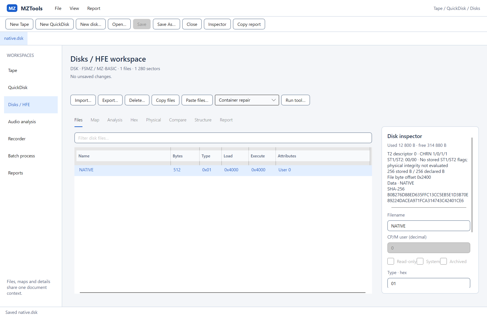
Windows · track mapaCore rozložení, vlastní viewport a přesné CHRN/ST1/ST2.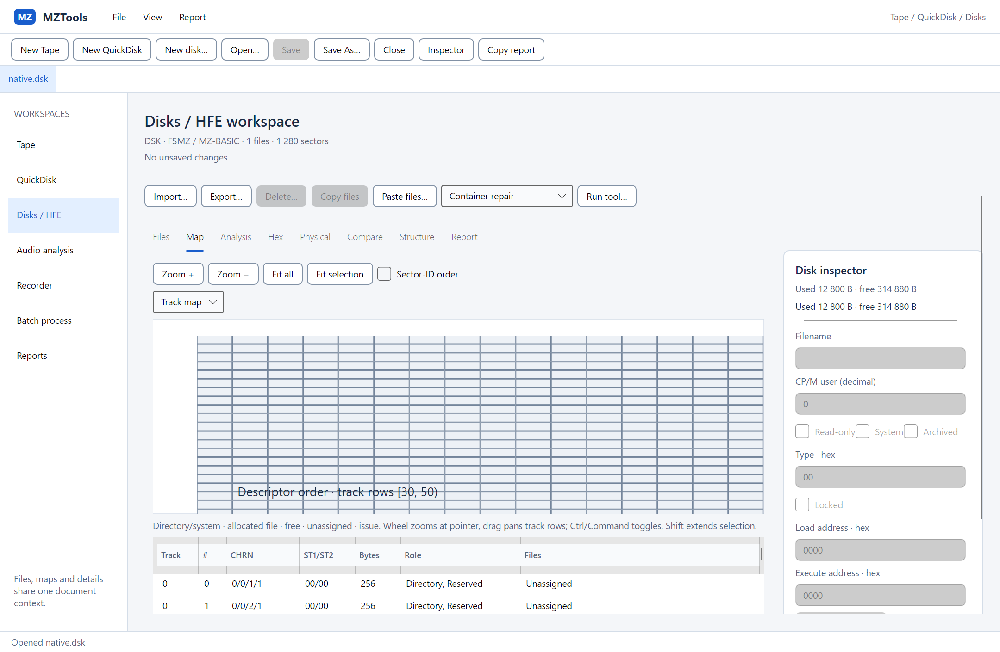
Schematický diskový surfaceSkutečný headless render nad Core modelem. Pozice nejsou měřený flux.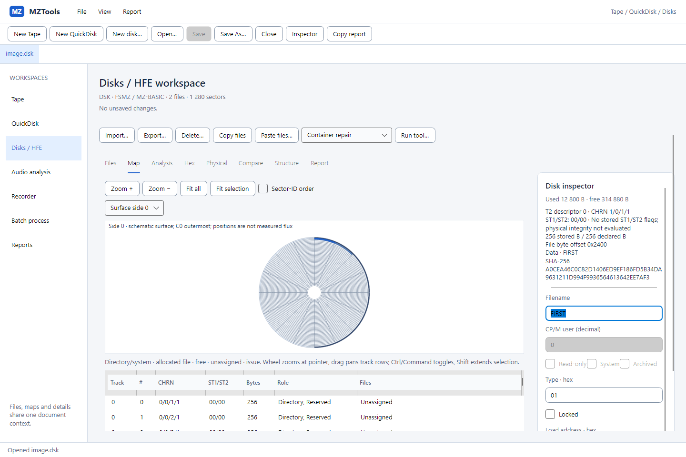
Zapisovatelný hex po ApplySkutečný buffer a Core validace; ostatní rozsahy zůstaly zachovány.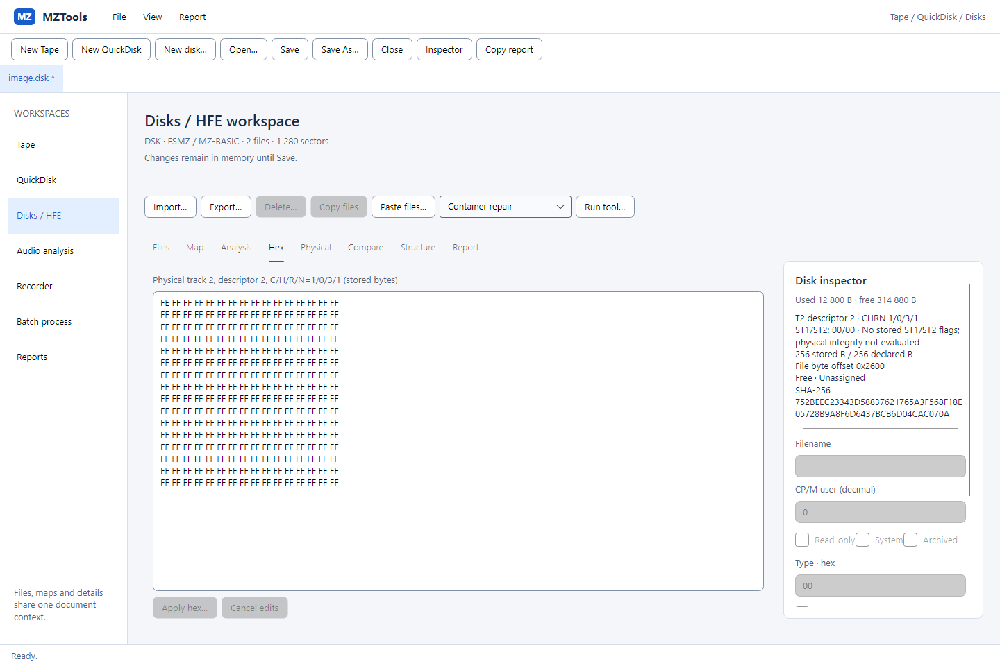
Windows · fyzická HFE stopaUložené bitcells, CRC evidence, timing a index ze skutečného HFE modelu.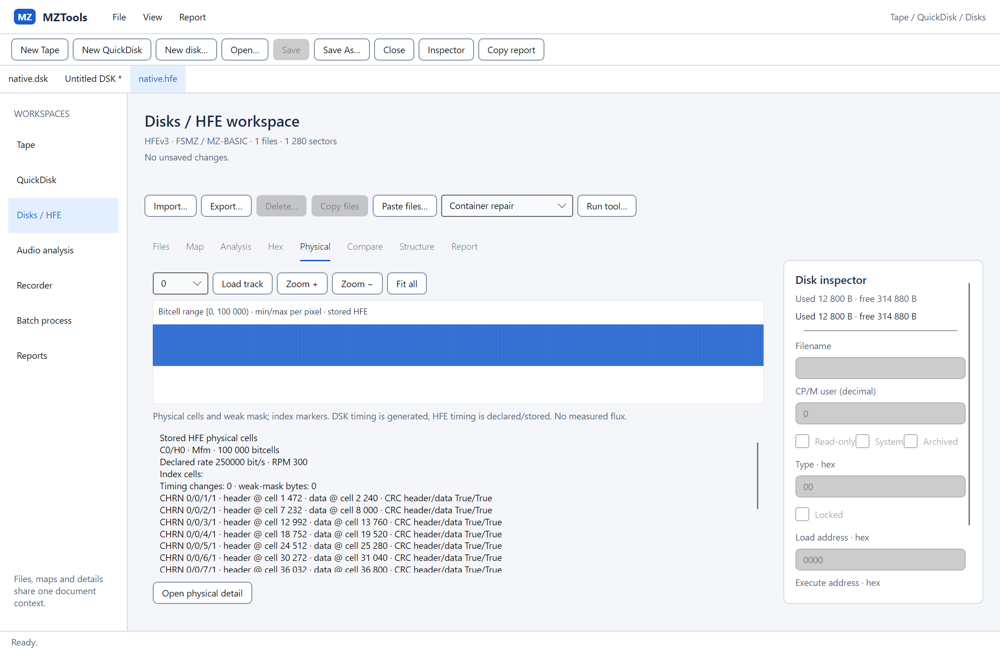
Windows · oprava v pamětiSave je blokovaný; nová kopie se ukládá explicitním Save As.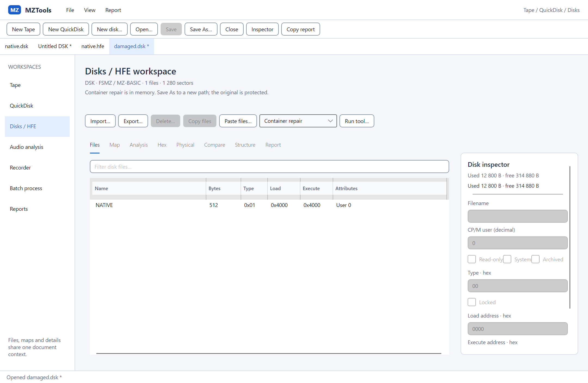
Linux/WSLg · stejný diskový workflowSkia render skutečného nativního X11 okna.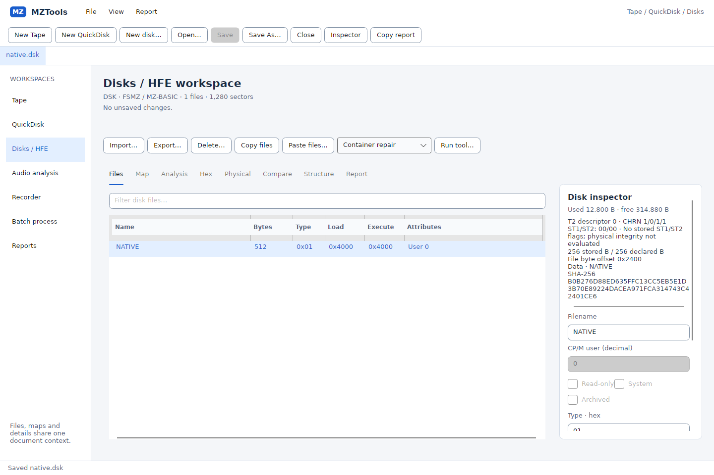
Linux/WSLg · stejná mapaShodné Core služby a společné Avalonia komponenty.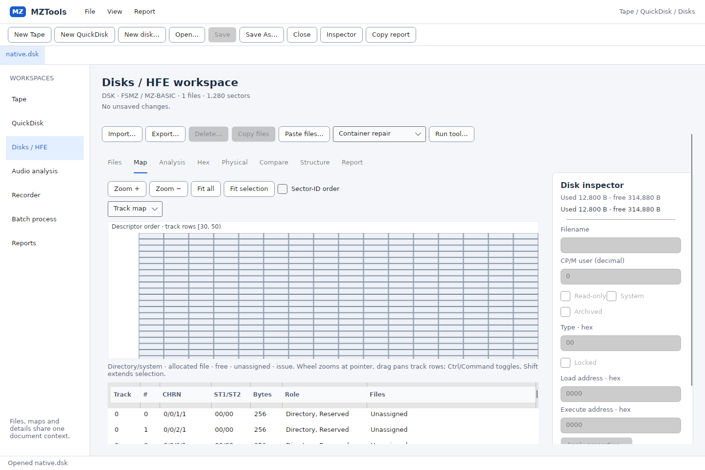
Linux/WSLg · fyzický detailStejná komponenta jako vložený i samostatný detail.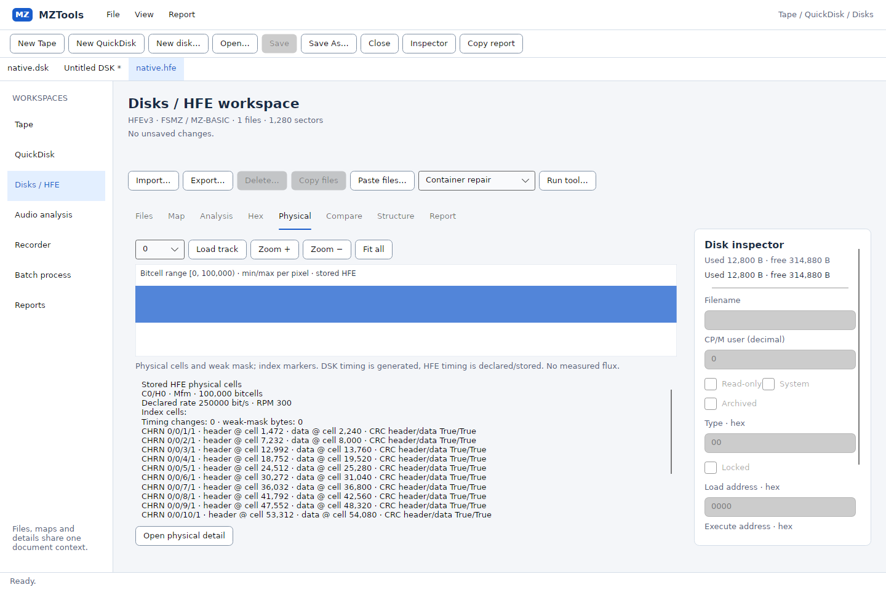
Malý viewport · 640 × 480Skutečný headless render. Obsah je posuvný; inspector je dostupný společným detailem.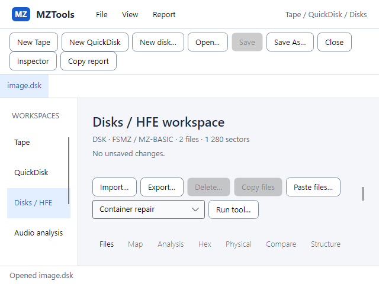
Render 125 % · 1366 × 768 logicalSimulovaný headless render scale, nikoliv tvrzení o skutečném monitorovém DPI.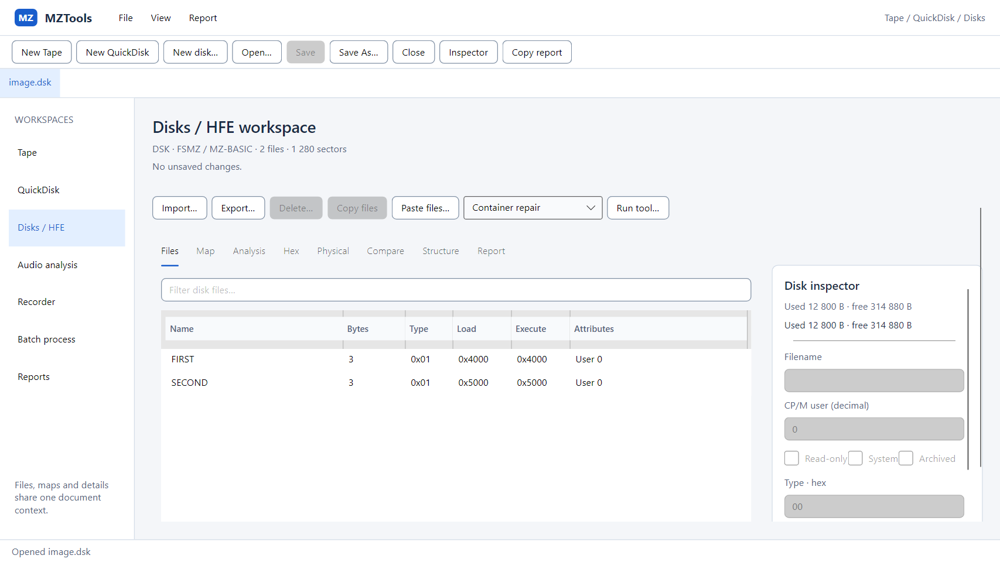
Render 200 % · 1366 × 768 logicalSimulovaný headless render scale; rozdíly font rasterizace nejsou změnou dat.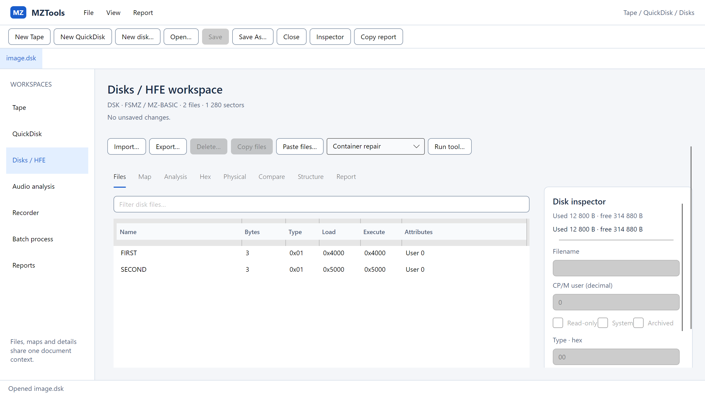
Výsledek F5 je schválen. Byl připraven konkrétní rozsah F6 k samostatnému schválení; F6 není implementována a WPF zůstává zachované.